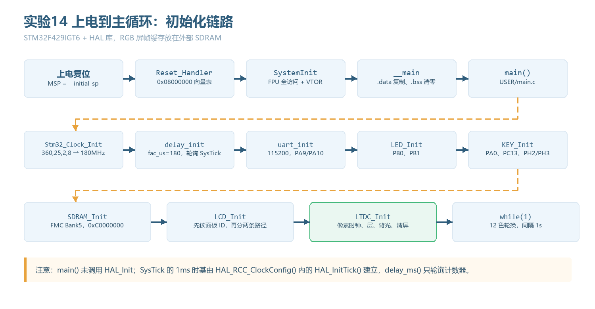
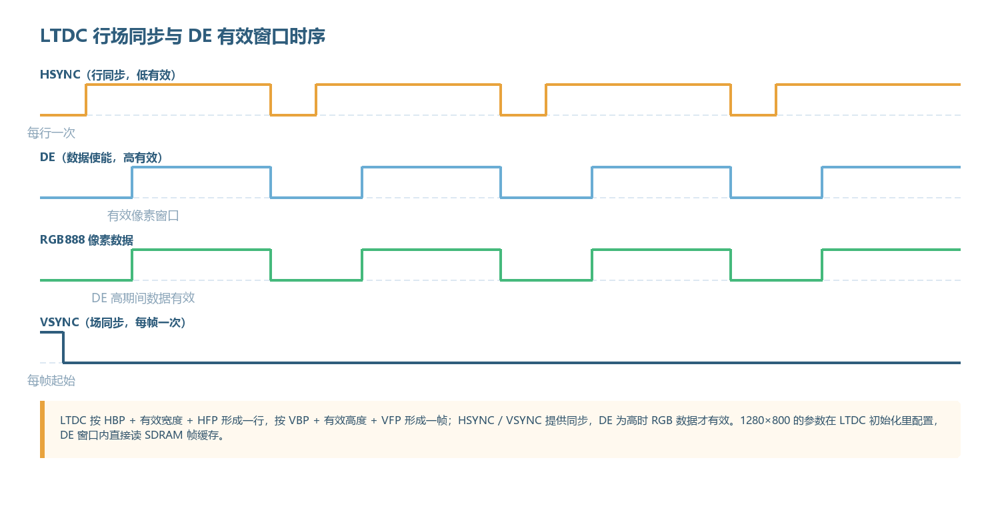
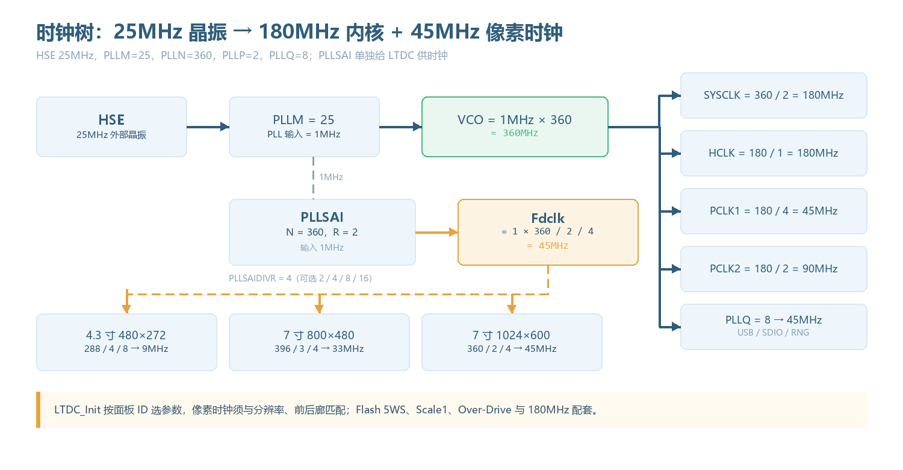
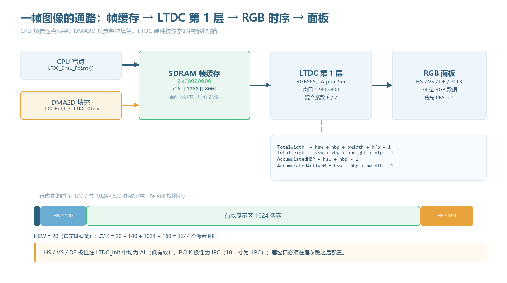
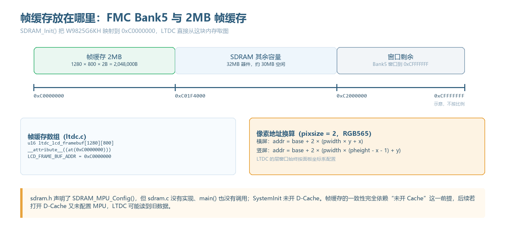
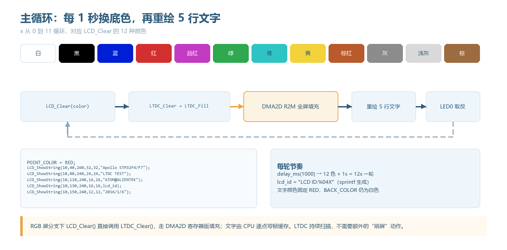

01 工程概述与硬件资源
前一个实验（实验13）只是把 SDRAM 当“大数组”做读写测试；本实验让这块 SDRAM 真正干活：LTDC 的帧缓存就定位在 0xC0000000，CPU 只管往内存里写像素，LTDC 按像素时钟把内容一行行送到 RGB 接口。实验12 的 MCU 屏需要“读 ID → 写命令 → 写数据”，本实验的面板没有控制器，只有 RGB 数据线、行场同步和时钟。
| 资源 | 引脚 / 接口 | 在本实验中的作用 |
|---|---|---|
| RGB 屏 | LTDC：PF10、PG6/7/11、PH9~15、PI0/1/2/4/5/6/7/9/10 | 24 位 RGB 数据 + HS/VS/DE/PCLK，分辨率由面板决定 |
| 背光 | PB5（LCD_LED） | LTDC_Init() 末尾置 1 点亮 |
| 面板 ID | PG6=M0，PI2=M1，PI7=M2 | 上电先当输入读 3 位编码，识别屏型号 |
| 外部 SDRAM | FMC Bank5，0xC0000000 | 32MB；前 2MB 作 1280×800 帧缓存 |
| DS0（红灯） | PB1（LED0） | 主循环每帧取反，1s 一个亮灭周期 |
| 串口 1 | PA9 / PA10，115200 8N1 | 只做初始化，本实验主流程不打印 |
| KEY0/KEY1/KEY2 | PA0 / PC13 / PH2、PH3 | 初始化但主循环未使用 |
02 目录与文件分工
| 文件 | 负责什么 | 本页关注点 |
|---|---|---|
| CORE/startup_stm32f429xx.s | 栈堆、向量表、Reset_Handler | 初始 MSP、复位入口、弱符号 |
| USER/system_stm32f4xx.c | SystemInit()：FPU、RCC 复位、VTOR | 时钟切换前的现场 |
| USER/main.c | 初始化顺序、12 色轮换、文字重绘 | 整条链的主线 |
| SYSTEM/sys/sys.c | Stm32_Clock_Init() | 25MHz → 180MHz |
| SYSTEM/delay/delay.c | delay_init/us/ms | 轮询 SysTick，不用中断 |
| SYSTEM/usart/usart.c | uart_init() 与 fputc | 115200、PA9/PA10 |
| HARDWARE/SDRAM/sdram.c | FMC Bank5、上电命令序列 | 帧缓存的物理载体 |
| HARDWARE/LCD/ltdc.c | 面板 ID、像素时钟、时序、层、DMA2D 填充 | 本实验核心 |
| HARDWARE/LCD/lcd.c | LCD_Init() 分派、画点/字符/清屏 | RGB 与 MCU 屏两条路径 |
| HARDWARE/LED、KEY | 指示灯与按键 | 主循环只用 LED0 |
STM32F429IGTx，编译宏 USE_HAL_DRIVER, STM32F429xx；内部 SRAM 只有 192KB，放不下 1280×800×2B 的整屏缓存，这是必须外扩 SDRAM 的直接原因。03 启动流程总览


一行由 HBP + 有效宽度 + HFP 组成，一帧由 VBP + 有效高度 + VFP 组成；HSYNC/VSYNC 负责同步，DE 为高电平时 RGB 数据才被屏采样。这些参数与 1280×800 分辨率一一对应，DE 窗口内的像素直接取自 SDRAM 帧缓存。
// USER/main.c（节选） int main(void) { u8 x=0; u8 lcd_id[12]; Stm32_Clock_Init(360,25,2,8); // 180MHz delay_init(180); uart_init(115200); LED_Init(); KEY_Init(); SDRAM_Init(); // 先让帧缓存的“地基”可用 LCD_Init(); // 读屏 ID，再走 LTDC 初始化 POINT_COLOR=RED; sprintf((char*)lcd_id,"LCD ID:%04X",lcddev.id); while(1) { /* 12 色轮换 + 文字 + LED0 */ } }
为什么是这个顺序
- 时钟必须最先：后面所有外设的分频、波特率、SysTick 节拍都以 180MHz 为前提。
- SDRAM 必须在 LCD 之前：
ltdc.c里的帧缓存数组用__attribute__((at(0xC0000000)))固定定位，LTDC 一开就会去读这块地址；SDRAM 控制器没初始化时读到的是总线错误或全 0。 - 串口初始化与显示无直接关系：RGB 屏分支的
LCD_Init()不调用printf，所以顺序不像实验13 那样敏感，但保留在 LED/KEY 之前便于后续调试。
HAL_Init()。这不影响本实验：HAL 的 1ms 时基是在 HAL_RCC_ClockConfig() 内部调用 HAL_InitTick() 时建立的，而 delay_ms() 根本不使用 HAL 时基。04 启动文件与向量表
| 项目 | 源码位置 | 值 / 行为 |
|---|---|---|
| 栈大小 | Stack_Size EQU 0x400 | 1KB，栈顶符号 __initial_sp，复位时装入 MSP |
| 堆大小 | Heap_Size EQU 0x200 | 512B，本工程几乎不用 malloc |
| 复位向量 | 向量表第 2 项 DCD Reset_Handler | 上电后 PC 直接指向它 |
| 复位入口 | Reset_Handler | BLX SystemInit → BX __main |
| .data / .bss | __main（C 库） | 复制初值、清零未初始化段，然后才进 main() |
Reset_Handler PROC
EXPORT Reset_Handler [WEAK]
IMPORT SystemInit
IMPORT __main
LDR R0, =SystemInit
BLX R0
LDR R0, =__main
BX R0
ENDP
向量表里已经预留了 LTDC_IRQHandler、LTDC_ER_IRQHandler、DMA2D_IRQHandler 的位置，但本实验没有开启这三个中断：LTDC 靠硬件自动扫描，DMA2D 填充用轮询 DMA2D_FLAG_TC 等完成，所以它们都停在启动文件里的默认死循环（弱定义）。
[WEAK]：用户在 stm32f4xx_it.c 里写同名函数即可覆盖。本工程只重写了 SysTick_Handler 与 USART1_IRQHandler。05 SystemInit 与“缺席”的 HAL_Init
// USER/system_stm32f4xx.c void SystemInit(void) { #if (__FPU_PRESENT == 1) && (__FPU_USED == 1) SCB->CPACR |= ((3UL << 10*2)|(3UL << 11*2)); /* CP10/CP11 全访问 */ #endif RCC->CR |= 0x00000001; // 打开 HSI RCC->CFGR = 0x00000000; // 复位时钟配置 /* ... 关闭 HSE/PLL，等待 HSI 成为系统时钟 ... */ SCB->VTOR = FLASH_BASE | 0x00; // 向量表仍在 0x08000000 }
HAL_Init 没调用，时基从哪来
按常规流程，HAL_Init() 会设置 NVIC 优先级分组并调用 HAL_InitTick() 配置 SysTick。这个工程直接把它省了，但 HAL_RCC_ClockConfig() 在切换完时钟后会自己调用一次 HAL_InitTick(TICK_INT_PRIORITY)，把 SysTick 重装为 1ms。因此：
HAL_GetTick()/HAL_Delay()可用，但优先级分组保持复位默认值（PRIGROUP=0，4 位抢占、无子优先级）。- 本工程的
delay_ms()不使用中断，也不依赖HAL_GetTick()，所以即使时基异常也不会卡死延时。 - 真正依赖超时的是
HAL_SDRAM_SendCommand()与HAL_SDRAM_ProgramRefreshRate()，它们用HAL_GetTick()判断超时，因此 Stm32_Clock_Init 必须先于 SDRAM_Init。
HAL_Init() 补回去会更稳，但要注意补回后 HAL_InitTick() 会在 16MHz 下先装一次重装值，随后 HAL_RCC_ClockConfig() 会再按新频率重装，顺序不能颠倒。06 时钟树与像素时钟

| 输出 | 算式 | 结果 | 供给 |
|---|---|---|---|
| SYSCLK | 25MHz ÷ 25 × 360 ÷ 2 | 180MHz | 系统时钟 |
| HCLK | 180MHz ÷ 1 | 180MHz | AHB、FMC、SysTick |
| PCLK1 | 180MHz ÷ 4 | 45MHz | APB1 外设 |
| PCLK2 | 180MHz ÷ 2 | 90MHz | APB2 外设 |
| PLLQ | 360MHz ÷ 8 | 45MHz | USB / SDIO / RNG |
| Fdclk（10.1 寸） | 1MHz × 360 ÷ 2 ÷ 4 | 45MHz | LTDC 像素时钟 |
| Fdclk（7 寸 1024×600 / 8 寸） | 1MHz × 306 ÷ 3 ÷ 2 | 51MHz | LTDC 像素时钟 |
像素时钟不是“越快越好”
LTDC_Clk_Set(pllsain, pllsair, pllsaidivr) 只改 PLLSAI 的三个参数，输入固定是 PLLM 分频后的 1MHz。不同面板的像素时钟在 LTDC_Init() 里按 ID 选择：4.3 寸 288/4/8=9MHz，7 寸 800×480 396/3/4=33MHz，7 寸 1024×600 与 8 寸 306/3/2=51MHz，10.1 寸 360/2/4=45MHz。时钟与前后廊必须成套匹配，单改一个就会出现花屏、偏移或黑屏。
PWR_REGULATOR_VOLTAGE_SCALE1、HAL_PWREx_EnableOverDrive()、Flash 等待 FLASH_LATENCY_5（5WS = 6 个 CPU 周期）。三者任何一个缺失，现象通常是随机死机或串口乱码。07 延时与串口
void delay_init(u8 SYSCLK)
{
HAL_SYSTICK_CLKSourceConfig(SYSTICK_CLKSOURCE_HCLK); // 时钟源 HCLK
fac_us = SYSCLK; // 180 → 1us 需要 180 个节拍
}
void delay_us(u32 nus)
{
u32 ticks = nus * fac_us;
u32 reload = SysTick->LOAD; // HAL_InitTick 装好的 1ms 重装值
u32 told = SysTick->VAL;
while(1) {
u32 tnow = SysTick->VAL;
if(tnow != told) {
if(tnow < told) tcnt += told - tnow;
else tcnt += reload - tnow + told;
told = tnow;
if(tcnt >= ticks) break;
}
}
}
SYSTEM_SUPPORT_OS 为 0，所以走的是上面这段“裸机轮询”分支：不使能 SysTick 中断，也不重写 LOAD，只借用 HAL_InitTick() 装好的 1ms 周期做递减计数。若把 LOAD 改成 0，delay_us 会永远等不到 tnow != told，这是排查“卡在延时里”的第一检查点。
串口只做初始化
| 项目 | 配置 | 说明 |
|---|---|---|
| USART1 | 115200、8 数据位、1 停止位、无校验、无流控 | uart_init(115200) |
| 引脚 | PA9=TX，PA10=RX，AF7，复用推挽，上拉 | HAL_UART_MspInit |
| 中断 | RXNE 使能，NVIC 抢占 3 / 子优先级 3 | 主流程未使用接收数据 |
| printf | fputc 重定向到 USART1 | 等待 TXE 后写 DR |
LCD_Init() 之前插入 printf 调试语句，就要先确认串口时钟与引脚已初始化。08 SDRAM：帧缓存的地基
| 参数 | 源码值 | 含义 |
|---|---|---|
| Bank | FMC_SDRAM_BANK1 | 接在 Bank5，基地址 0xC0000000 |
| 行 / 列 | 13 行 / 9 列 | 8192 行 × 512 列 |
| 数据宽度 | 16 位 | 一次传输 2 字节 |
| 内部 Bank | 4 个 | 32MB = 8192 × 512 × 4 × 2B |
| CAS | 3 | 读命令后 3 个时钟出数据 |
| SDCLK | HCLK / 2 = 90MHz | 周期 11.1ns |
| 刷新计数 | 683 | 64ms × 90MHz ÷ 8192 − 20 |
| 时序 | TRCD=2、TRP=2、TRC=6、TMRD=2、TXSR=8、TRAS=6 | 与 W9825G6KH 手册对应 |
// HARDWARE/SDRAM/sdram.c SDRAM_Send_Cmd(0,FMC_SDRAM_CMD_CLK_ENABLE,1,0); // 1. 时钟使能 delay_us(500); // 至少 200us SDRAM_Send_Cmd(0,FMC_SDRAM_CMD_PALL,1,0); // 2. 所有 Bank 预充电 SDRAM_Send_Cmd(0,FMC_SDRAM_CMD_AUTOREFRESH_MODE,8,0);// 3. 自刷新 8 次 SDRAM_Send_Cmd(0,FMC_SDRAM_CMD_LOAD_MODE,1,temp); // 4. 写模式寄存器 HAL_SDRAM_ProgramRefreshRate(&SDRAM_Handler,683); // 5. 刷新率
这五步必须按顺序执行，少一步的典型现象是：只使能时钟 → 读写全 0；没预充电 → 第一次访问就 HardFault；模式寄存器没写 → 突发长度与 CAS 错，读回的数据错位。
09 LCD_Init：先认屏再分路
void LCD_Init(void)
{
lcddev.id = LTDC_PanelID_Read(); // 检查是否有 RGB 屏接入
if(lcddev.id != 0)
{
LTDC_Init(); // 有 RGB 屏：走 LTDC
}
else
{
// 走 FMC NE1，读 0x9341 / NT35310 等 MCU 屏 ID
}
}
LTDC_PanelID_Read() 把 PG6、PI2、PI7 配成上拉输入，按 M2:M1:M0 组成 0~5 的索引，再查表返回 16 位 ID。LTDC_Init() 内部又读了一次面板 ID，因此上电实际上读了两次；第二次读之前，HAL_LTDC_MspInit() 还没有把这三个脚切成 AF，所以仍然读得到。
| 索引 M2:M1:M0 | 返回 ID | 面板 | 时序与时钟是否完整 |
|---|---|---|---|
| 000 | 0x4342 | 4.3 寸 480×272 | 完整，9MHz |
| 001 | 0x7084 | 7 寸 800×480 | 完整，33MHz |
| 010 | 0x7016 | 7 寸 1024×600 | 完整，51MHz |
| 011 | 0x7018 | 7 寸 1280×800 | 只填了分辨率，注释“其他参数待定” |
| 100 | 0x8016 | 8 寸 1024×600 | 完整，51MHz，时序与 7 寸 1024×600 相同 |
| 101 | 0x1018 | 10.1 寸 1280×800 | 完整，45MHz，PCLK 极性为 IIPC |
| 其他 | 0 | 无 RGB 屏 | 转去 MCU 屏分支 |
分支缺口与已补齐项：
- 8 寸分支已按 ATK70048 补齐：判断值为
0X8016，分辨率 1024×600；hsw=20、hbp=140、hfp=160、vsw=3、vbp=20、vfp=12，六项均为 ATK70048 规格表的典型值。像素时钟调用LTDC_Clk_Set(306,3,RCC_PLLSAIDIVR_2)得到 51MHz：规格典型值是 51.2MHz，但 1MHz 的 PLLSAI 无法整除出 51.2，51MHz 是最接近值，帧率约 59.8Hz，仍在 45~57MHz 范围内。 - 1280×800 分支没有像素时钟：
0X7018只赋了pwidth/pheight，hsw/hbp/hfp全为 0，也没有调用LTDC_Clk_Set()。真接这种屏，需要按面板手册补齐时序。
10 LTDC 流水线与时序参数

// HARDWARE/LCD/ltdc.c · LTDC_Init()
LTDC_Handler.Init.HSPolarity = LTDC_HSPOLARITY_AL;
LTDC_Handler.Init.VSPolarity = LTDC_VSPOLARITY_AL;
LTDC_Handler.Init.DEPolarity = LTDC_DEPOLARITY_AL;
if(lcdid==0X1018) LTDC_Handler.Init.PCPolarity = LTDC_PCPOLARITY_IIPC;
else LTDC_Handler.Init.PCPolarity = LTDC_PCPOLARITY_IPC;
LTDC_Handler.Init.HorizontalSync = lcdltdc.hsw - 1;
LTDC_Handler.Init.VerticalSync = lcdltdc.vsw - 1;
LTDC_Handler.Init.AccumulatedHBP = lcdltdc.hsw + lcdltdc.hbp - 1;
LTDC_Handler.Init.AccumulatedVBP = lcdltdc.vsw + lcdltdc.vbp - 1;
LTDC_Handler.Init.AccumulatedActiveW = lcdltdc.hsw + lcdltdc.hbp + lcdltdc.pwidth - 1;
LTDC_Handler.Init.AccumulatedActiveH = lcdltdc.vsw + lcdltdc.vbp + lcdltdc.pheight - 1;
LTDC_Handler.Init.TotalWidth = lcdltdc.hsw + lcdltdc.hbp + lcdltdc.pwidth + lcdltdc.hfp - 1;
LTDC_Handler.Init.TotalHeigh = lcdltdc.vsw + lcdltdc.vbp + lcdltdc.pheight + lcdltdc.vfp - 1;
HAL_LTDC_Init(<DC_Handler);
| 面板 | HSW | HBP | HFP | VSW | VBP | VFP | Fdclk |
|---|---|---|---|---|---|---|---|
| 4.3 寸 480×272 | 1 | 40 | 5 | 1 | 8 | 8 | 9MHz |
| 7 寸 800×480 | 1 | 46 | 210 | 1 | 23 | 22 | 33MHz |
| 7 寸 1024×600 | 20 | 140 | 160 | 3 | 20 | 12 | 51MHz |
| 8 寸 1024×600 | 20 | 140 | 160 | 3 | 20 | 12 | 51MHz |
| 10.1 寸 1280×800 | 10 | 140 | 10 | 3 | 10 | 10 | 45MHz |
以 7 寸 1024×600 为例：一行的总像素时钟是 20 + 140 + 1024 + 160 = 1344，写进寄存器时统一减 1，得到 TotalWidth = 1343；一帧总行数是 3 + 20 + 600 + 12 = 635。前后廊不是“随便填的余量”，它必须与面板手册一致，否则图像会左右偏移、上下滚动或直接黑屏。
11 层配置与帧缓存

// ltdc.c：最大分辨率 1280×800，RGB565 时每像素 2 字节 u16 ltdc_lcd_framebuf[1280][800] __attribute__((at(LCD_FRAME_BUF_ADDR))); // LCD_FRAME_BUF_ADDR = 0xC0000000 LTDC_Layer_Parameter_Config(0,(u32)ltdc_framebuf[0],LCD_PIXFORMAT,255,0,6,7,0X000000); LTDC_Layer_Window_Config(0,0,0,lcdltdc.pwidth,lcdltdc.pheight); LTDC_Display_Dir(0); // 默认竖屏 LTDC_Select_Layer(0); // 选择第 1 层 LCD_LED = 1; // 点亮背光 LTDC_Clear(0XFFFFFFFF); // 清成白色
数组按 [1280][800] 声明，是为了在任何面板下都能装下整屏；实际只用前 pwidth × pheight × 2 字节。以 1280×800 计算正好 2,048,000 字节，地址范围 0xC0000000 ~ 0xC01F3FFF。层参数必须在窗口参数之前配置，源码注释也特别强调这一点：HAL_LTDC_SetWindowSize() 会立即写寄存器，若层还没配置，窗口会被旧参数覆盖。
两种写缓存的方式
| 方式 | 源码 | 特点 |
|---|---|---|
| CPU 逐点写 | LTDC_Draw_Point() | 字符、图形；每次 2 字节，速度受总线影响 |
| DMA2D 整块填 | LTDC_Fill() / LTDC_Clear() | R2M 模式，一次填满矩形，CPU 只等 TC 标志 |
// DMA2D 寄存器版填充（LTDC_Fill） DMA2D->CR = DMA2D_R2M; // 寄存器到存储器 DMA2D->OPFCCR = LCD_PIXFORMAT; // RGB565 DMA2D->OOR = offline; // 行偏移 = pwidth - 宽 DMA2D->OMAR = addr; // 目标地址 DMA2D->NLR = 行数 | (列数 << 16); DMA2D->OCOLR = color; DMA2D->CR |= DMA2D_CR_START; while((DMA2D->ISR & DMA2D_FLAG_TC)==0) { /* 超时 0x1FFFFF */ }
sdram.h 里虽然声明了 SDRAM_MPU_Config()，但 sdram.c 没有实现、main() 也没有调用。当前“CPU 写完、LTDC 立刻能读到”完全依赖 Cache 关闭这一前提；后续若打开 D-Cache，必须把帧缓存区配成 Write-Through 或 Non-Cacheable。12 坐标换算与清屏
void LTDC_Draw_Point(u16 x,u16 y,u32 color)
{
if(lcdltdc.dir) // 横屏
*(u16*)((u32)ltdc_framebuf[0] + lcdltdc.pixsize*(lcdltdc.pwidth*y + x)) = color;
else // 竖屏
*(u16*)((u32)ltdc_framebuf[0] + lcdltdc.pixsize*(lcdltdc.pwidth*(lcdltdc.pheight-x-1) + y)) = color;
}
| 符号 | 值 / 来源 | 作用 |
|---|---|---|
pixsize | 2（RGB565） | 每个像素 2 字节 |
pwidth | 面板物理宽度，如 1024 | 行的跨度（stride） |
pheight | 面板物理高度，如 600 | 竖屏旋转时的基准 |
dir | LTDC_Display_Dir(0) → 竖屏 | 决定是否旋转坐标 |
清屏最终落到 LTDC_Fill(0,0,width-1,height-1,color)。竖屏时 lcdltdc.width = pheight、lcdltdc.height = pwidth，所以清屏矩形是“逻辑坐标”的整屏，内部再转换成面板坐标。因为 DMA2D 只认面板坐标，LTDC_Fill() 开头会先把 (sx,sy)-(ex,ey) 旋转成 (psx,psy)-(pex,pey)，这一步写错会表现为“清屏只清了一半”或“清到屏幕外”。
ltdc_framebuf[1] 没有赋值。若后续要开双层（例如 OSD 叠加），必须给第 2 层另外分配一块不重叠的缓存，并注意两层窗口的 Alpha 与混合系数。13 主循环与现象

| 操作 | 源码 | 可观察现象 |
|---|---|---|
| 上电 | LTDC_Clear(0xFFFFFFFF)，随后 x=0 清白 | 屏幕白底，左上角出现 5 行红字 |
| 每 1 秒 | LCD_Clear(颜色) + 5 次 LCD_ShowString | 底色按白、黑、蓝、红、品红、绿、青、黄、棕红、灰、浅灰、棕循环 |
| 每帧 | LED0 = !LED0 | DS0（PB1）亮 1s、灭 1s |
| 12 帧 | x++，到 12 归零 | 12 秒完成一轮颜色循环 |
main.c 的 switch 顺序换色，每帧都重绘 5 行文字、翻转 LED0，并模拟 delay_ms(1000) 的节奏；按钮只是把 1 秒的等待压缩成立即执行，方便观察 12 色顺序。14 总结与常见问题排查
| 阶段 | 关键动作 | 失败时的典型现象 |
|---|---|---|
| ① 复位 | MSP/PC 取自向量表，跳 Reset_Handler | 上电无反应，查 BOOT0 与下载 |
| ② SystemInit | 开 FPU、RCC 复位、VTOR=0x08000000 | 中断跑飞、HardFault |
| ③ 时钟 | PLL 180MHz + OverDrive + 5WS | 随机死机、串口乱码 |
| ④ SDRAM | FMC Bank5 + 五步上电序列 | 帧缓存写入无效、白屏 |
| ⑤ LTDC | 读面板 ID → 像素时钟 → 时序 → 层 → 背光 | 黑屏、花屏、偏移、颜色错 |
| ⑥ 主循环 | 12 色轮换 + 文字 + LED0 | 颜色不换、文字残影、LED 不闪 |
现象 → 原因 → 排查
| 现象 | 可能原因 | 排查动作 |
|---|---|---|
| 整屏白、无文字 | 背光未开；或面板 ID 读到 0 走了 MCU 屏分支 | 量 PB5 是否为高；在 LCD_Init 后看 lcddev.id |
| 8 寸屏偏移 / 无显示 | 时序按 1024×600 典型值补齐，与实物面板不一定完全一致 | 对照面板手册逐项核对 hsw/hbp/hfp、vsw/vbp/vfp 与 LTDC_Clk_Set |
| 7 寸 1280×800 无显示 | 0X7018 分支只填了分辨率 | 按面板手册补齐 hsw/hbp/hfp/vsw/vbp/vfp 与 LTDC_Clk_Set |
| 画面左右偏移 / 滚动 | 前后廊与面板不匹配，或寄存器忘记减 1 | 用示波器测 PCLK/HS 频率，核对 TotalWidth 与 HBP |
| 花屏、闪烁 | 像素时钟过高，或 SDRAM 带宽不足 | 降低 Fdclk；确认 SDCLK=90MHz、刷新计数 683 |
| 文字有残影 | 换底色后没有重绘文字，或只清了局部 | 确认每轮都调用 LCD_Clear 全屏 + 5 行 LCD_ShowString |
| 颜色明显偏色 | RGB 数据线虚焊，或像素格式不是 RGB565 | 查 PF/PG/PH/PI 数据脚；核对 LCD_PIXFORMAT |
| 程序卡在 SDRAM_Init | FMC 时钟未开、颗粒供电异常、命令超时 | 查 HAL_SDRAM_SendCommand 返回值，量 SDCLK 波形 |